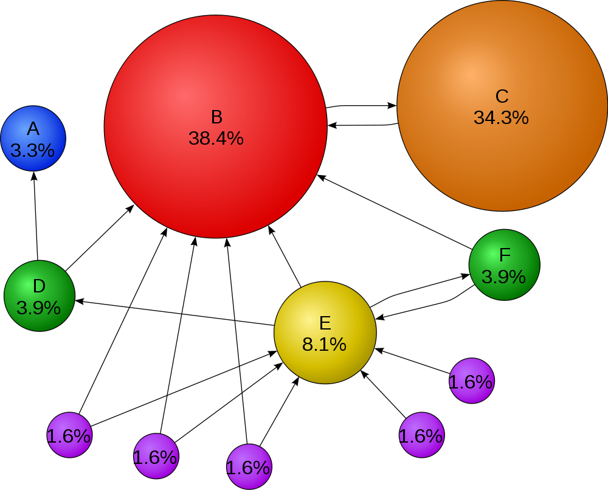
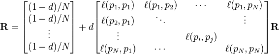
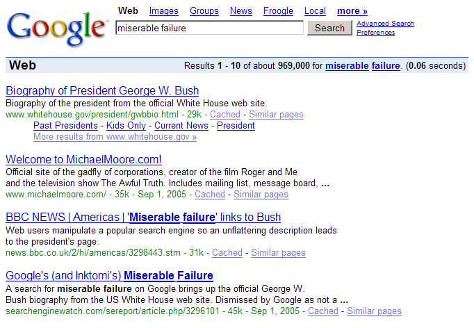
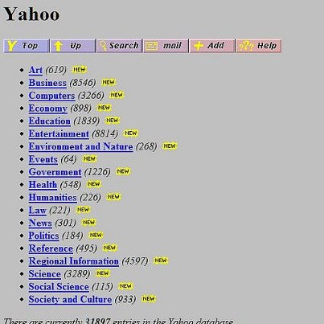

name: inverse layout: true class: left, top, inverse --- # PageRank center:  ??? ## Web page importance + Also used to model importance of people, places... anything that has a reputation + inbound links are important, but scaled by the importance of the source + C still important, even though it only has one inbound --- # Random Walks + Starting from a random page, what is the likelihood of winding up on a target page? + Starting point captured by initial constant + Stopping captured by "damping factor" (0.85) <img src="img/pagerank.png"/> ??? ## Original + Original paper did not divide by N + This gives relative weights of pages, but not a formal probability because sum will not add up to N + Either way is fine for our purposes --- # Example + ```B=, =C```, ```D=, all link to =A``` + =B= has PageRank of 0.5, 4 links + =C= has PageRank of 0.7, 4 links + =D= has PageRank of 0.2, 1 link ??? ## Calculations + 0.15 + 0.85 * sum(PR/links for (pr,links) in pages) + 0.15 + 0.85 * sum(0.5/4, 0.7/4, 0.2/1) + 0.15 + 0.85 * 0.465 + 0.554525 + From _Programming Collective Intelligence_ --- # Other Pages + But how did we know the PageRank of other pages? + Similar to SimRank, we calculate iteratively until convergence --- # Representing Graphs + Adjacency Matrix: Represent graph edges in a matrix | V | A | B | C | D | | A | 0 | 0 | 0 | 0 | | B | 1 | 0 | 1 | 0 | | C | 1 | 0 | 0 | 1 | | D | 1 | 1 | 0 | 0 | ??? ## Diversion + Take a step back so we can motivate how to express these calculations as linear algebra + Using linear algebra can help us translate graph concepts to fairly elegant code, as well as realize some optimizations + Draw + Symmetric? When? --- # Representing Graphs + Adjacency List: For a vertex, list all connections ```csv A [] B [A,C] C [A,D] D [A,B] ``` ??? ## Diversion + You can think of this as keys (vertex) and values (list of vertices) + When would thinking in key-values be useful? MapReduce + Back to matrix representation --- # Eigenvector + PageRank formula divides by number of links + Modify adjacency matrix typically also normalized such that all rows sum to 1 + PageRank scores are entries in the largest eigenvector of the matrix representation  --- # Eigenvector centrality + Another measurement for graphs, using the simple adjacency matrix + Relative influence of a node (no normalization) --- # Adversarial + Source does not want to be discovered + Patterns are purposefully hidden: so discover the patterns of hiding + If adversary knows your techniques, they can take advantage of weakness ??? ## Weakness + Reading: paper discovering hiding patterns + Weakness of pagerank? + We assume that these links are legitimate. + What happens if the links are not conveying authority? --- # Google Bomb center + Milder forms of adversarial work  ??? ## Link farms + Link farms try to create fake links to pages, + [JC Penny's link farm](http://www.nytimes.com/2011/02/13/business/13search.html?pagewanted=all) --- # Hubs & Authorities two_col: + Earlier in the web, more structure + Hubs: collected links to different resources + Authorities: Gave out specific information + Score separately?  ??? ## Alternatives + Some other interesting network analysis tools --- # HITS + Authority score: sum(hub(i) for i in inbound\_links) + Hub score: sum(authority(i) for i in outbound\_links) + Normalize: to ensure convergence, square root sum of squares of scores ??? ## Iterative + Sill iterative, but now using inbound and outbound links to judge + Hubs have outbound links to authoritive pages + Authorities have inbound links from good hubs --- # Connections + Connected: there exists a path from one vertex to another + Connectivity: minimum number of vertices to remove to disconnect remaining vertices + Clustering Coefficient: Measure of how connected a vertex or group of vertices are ??? ## Robustness + This is used to understand robustness of a system: if an earthquake damaged the Bay Bridge, could we still travel from one point to another? + What is the connectedness of Oakland and SF? + Closely related to min-cuts, which is discussed in the book + Network topology: what happens if a router fails? --- # Clustering Coefficient animate: + How many directed edges are possible between 3 vertices? + 4 vertices? + ```v*(v-1)``` + Undirected? + ```v*(v-1)/2``` + Clustering Coefficient: Ratio of actual edges to possible edges ??? ## Reading + Used in Reading this week + ```v*(v-1)``` connection to every other node but yourself + ```/2``` undirected, don't double count connections --- ## Example <img src="img/Directed_acyclic_graph.png"/> Connectivity Coefficient of 1; 4 ??? ### Answer + Neighbors of 1: 5 2 + 2*(2-1) / 2 = 1 + Actual links = 1 + Neighbors of 4: 3,5,6 + 3*(3-1) / 2 = 3 + Actual: 0 + If 3-5 connected? 1/3 --- # *Break* --- Slide 1 main notes Slide 2 main notes Slide 3 main notes Slide 4 main Slide 5 main a series of sections will work better for some definitions table table table table table notes Slide 6 main a series of sections will work better for some definitions notes Slide 7 main Slide 8 main Slide 9 main notes Slide 10 main notes check link next slide is two column Slide 11 main notes Slide 12 main a series of sections will work better for some definitions a series of sections will work better for some definitions a series of sections will work better for some definitions notes Slide 13 main a series of sections will work better for some definitions a series of sections will work better for some definitions a series of sections will work better for some definitions notes next slide is animated Slide 14 main notes Slide 15 main notes Slide 16 main Headings are the right level?